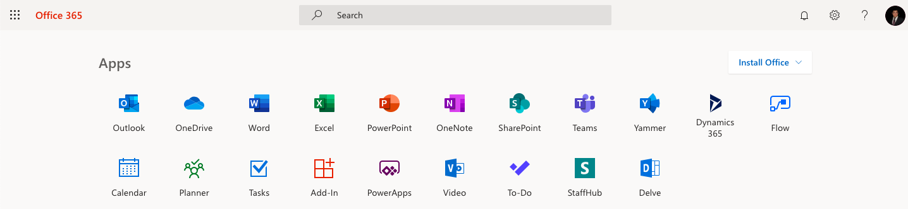
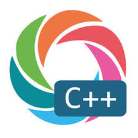
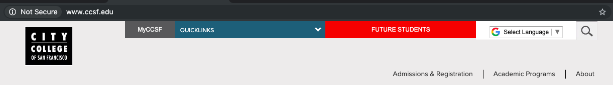

Ricky Huynh
I am Full Stacks Engineering. Some background in Electrical Engineer with experience in Computer Networking, Computer Science, Construction Management, Information Systems, Information Technology, and Mathematics. Also, I am interesting in Network Infrastructure.
Information about me can be find in LinkedIn
About me:I like to learn lilttle bit of everything, so I can understand people because they have some dirverse background. Also, I want to explore a little bit of everything in some career fields. I want to do little bit adventure on some locations that I live and work at. I let people know what days that I will not show up by giving advance notices.
Qualification, Professional, and Education Experiences
Job descriptions: This shows that some common Qualifications, Professional, and Education Experiences.
Qualifications Experiences
Create table and add some pictures from the table:
| Common/transferable skills: | Common Technical skills: | Advance Technical skills: |
|---|---|---|
|
|
|
|
I have some common technical skills. These technical skills are showing below:
I am showing one common technical skill is Office365 incldue Microsoft: Excel, Word, and PowerPoint which is using in many industries. 
{kind=link}
I am showing Google search picture.

I am showing another common technical skill is google apps or google suites.
Click Here if you want to see fullscreen slides of google apps or google suites.{kind=link}
{kind=link}
{kind=link}
Create this profile is showing that I have some advance technical skills, but I am showing that I have some backgroud in HTML/HTML5 (HyberText Markup Language)/CSS (Cascading Style Sheet)/JS (Java Script).
{kind=link}
Professional Experiences
This showing my Professional Experience including work and Education.
San Francisco Housing Authority (SFHA), San Francisco, CA | February 14, 2019 – Present | Intern
Click Here to see my experience in SFHA (San Francisco Housing Authority) pictures slides.
In-Home Supportive Services (IHSS), San Francisco, CA | December 2017 to Present
IHSS Independent Provider Assistance Center | Independent Provider
Department of Elections of San Francisco | Work Election | Election days: June 5 and November 6, 2018 | Poll Worker
Precincts: YMCA Richmond District, and Rochambeau Playground - Clubhouse, San Francisco, CA
Computer Science/Coding
{kind=link}

Click Here to show C++ and script in Linux by showing pictures of code and result.
Information Systems
{kind=link}
Electrical Engineering
{kind=link}
This is showing same Information, but some pictures format is different. Also some text format is different.
San Francisco Housing Authority (SFHA), San Francisco, CA | February 14, 2019 – Present | Intern
Electrical Engineering
Information Systems
Computer Science/Coding
Education Experiences
Bachelor of Science in Electrical Engineering with Minors in Mathematics and Information Systems
San Francisco State University, San Francisco, CA | August 2017

Coursework in Computer Networking and Information Technology, Computer Science, Construction Management, Healthcare Information Technology, Finance, and Computer Aided Design
City College of San Francisco, San Francisco, CA | Fall 2017 – Present
 Click here to go to City College of San Francisco (CCSF) website to search the coursework because some courseworks have thier own Departmentat in CCSF.
{kind=link}
This is showing same Information, but some pictures format is different. Also, one thumb picture is different.
San Francisco State University, San Francisco, CA | August 2017
Coursework in Computer Networking and Information Technology, Computer Science, Construction Management, Healthcare Information Technology, Finance, and Computer Aided Design
City College of San Francisco, San Francisco, CA | Fall 2017 – Present
Click here to go to City College of San Francisco (CCSF) website to search the coursework because some courseworks have thier own Departmentat in CCSF.
Get in touch
Contact me: If you have any questions, please Contact me. Plese leave your first and last name. Also, please leave your email with some messages, for questions.